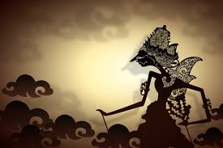
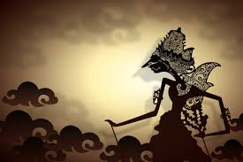
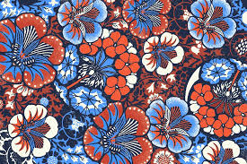

Wayang Kulit
Wayang kulit adalah seni pertunjukan tradisional yang memadukan unsur cerita dan musik gamelan. Wayang sering digunakan untuk menceritakan epos seperti Mahabharata dan Ramayana.
Wayang kulit adalah seni pertunjukan tradisional yang memadukan unsur cerita dan musik gamelan. Wayang sering digunakan untuk menceritakan epos seperti Mahabharata dan Ramayana.
Tari Kecak adalah tarian khas Bali yang biasanya dilakukan untuk merayakan acara-acara adat dan peringatan tertentu. Tarian ini terkenal dengan keindahan dan makna filosofisnya.

Batik adalah seni melukis kain yang menggunakan teknik lilin dan pewarnaan, dan Batik Jawa dikenal dengan motif yang khas dan memiliki nilai filosofis.
